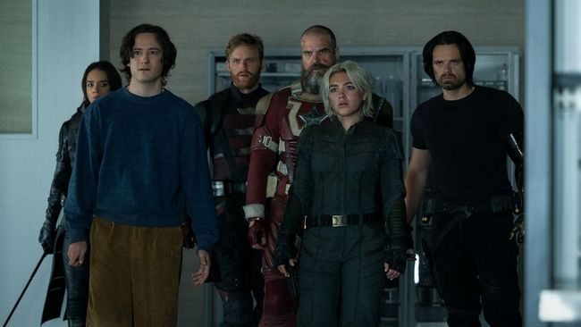

Sinopsis Thunderbolts*, Misi Berbahaya Geng Antihero Pertama MCU

Jakarta, News.id -- Marvel Cinematic Universe (MCU) kembali hadir dengan Thunderbolts* yang menjadi film ke-36 saga tersebut. Film itu juga dirilis sebagai penutup Fase Kelima The Multiverse Saga yang sudah berjalan selama tiga tahun.
Cerita Thunderbolts* mempertemukan sejumlah antihero MCU menjadi geng baru yang dituntut bersatu untuk menghentikan ancaman besar dan berbahaya.
Yelena Belova (Florence Pugh) melanjutkan hidupnya sebagai agen rahasia yang bekerja untuk Valentina Allegra de Fontaine (Julia Louis-Dreyfus).
Ia mengerjakan misi berbahaya dari Valentina yang sekarang menjabat Direktur CIA, seperti saat dikirim ke Malaysia untuk menghancurkan berkas-berkas OXE, perusahaan lama bosnya.
Misi itu tidak lepas dari posisi Valentina di CIA yang terancam karena digugat kongres AS. Ia dituding menyalahgunakan wewenang karena masih mengendalikan OXE, sehingga Valentina berusaha melenyapkan bukti-bukti tersebut.
Yelena mampu menyelesaikan misi itu dengan baik, tetapi muncul pergulatan batin dalam dirinya tentang pekerjaan yang selama ini dijalani. Ia merasa hampa walau mengerjakan misi-misi berbahaya setiap waktu.
Rasa galau itu sedikit tercerahkan setelah Yelena bertemu kembali dengan Alexei (David Harbour), ayahnya, setelah satu tahun tidak bertemu.
Ia mengaku ingin menjadi lebih terlihat di publik dan bermakna bagi masyarakat. Pada waktu yang sama, Valentina menghubunginya untuk misi terakhir sebagai agen rahasia.
Yelena diminta pergi ke pusat riset OXE di lokasi terpencil, mengawasi gerak-gerik seorang agen rahasia yang membelot, lalu menghabisinya.
Namun, setibanya di lokasi itu, ia terkejut karena agen yang muncul ternyata lebih dari satu. Ada John Walker (Wyatt Russell), Ghost (Hannah John-Kamen), dan Taskmaster (Olga Kurylenko) yang juga memiliki misi serupa.
Mereka saling menyerang karena memiliki misi yang sama. Tanpa disadari, keempat agen itu ternyata dijebak Valentina agar saling bunuh demi menghilangkan jejak agen yang pernah bekerja dengannya.
Situasi menjadi semakin membingungkan ketika seorang laki-laki asing bernama Bob (Lewis Pullman) tiba-tiba muncul. Agen rahasia dan Bob akhirnya mencari cara untuk kabur dari lokasi tersebut.
Namun, usaha itu menjadi kacau ketika Bucky Barnes (Sebastian Stan) yang telah menjadi anggota Kongres AS kembali muncul sebagai Winter Soldier dan menangkap mereka.
Situasi juga semakin rumit karena Valentina menyiapkan rencana baru untuk menyelamatkan posisinya sebagai Direktur CIA.
Thunderbolts* diarahkan Jake Schreier dari naskah yang ditulis Eric Pearson dan Joanna Calo. Schreier dikenal sebagai sutradara Paper Towns (2015) hingga serial Beef (2023).
Film itu menghadirkan nama-nama yang pernah muncul di rilisan MCU terdahulu, seperti Florence Pugh, Sebastian Stan, Wyatt Russell, Olga Kurylenko, David Harbour, Hannah John-Kamen, dan Julia Louis-Dreyfus.
Ada pula dua pemeran baru MCU yang muncul di Thunderbolts*, yakni Lewis Pullman sebagai Bob dan Geraldine Viswanathan sebagai Mel.
Thunderbolts* tayang mulai 30 April di bioskop Indonesia.